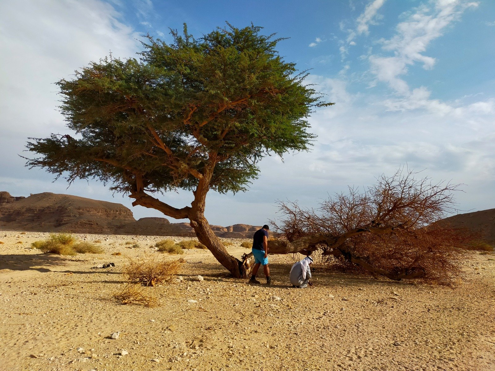

Permission-Based Travel
Desert and Rivers
Where deserts teach and rivers remember.
We design a small number of bespoke journeys each year through remote desert and river landscapes.
These are slow, fully permitted expeditions shaped by land conditions, local knowledge, and long-standing relationships.

Careful Access
Journeys shaped by land
Routes, pace, and decisions respond to weather, terrain, and local guidance. Nothing is rushed. Nothing is assumed.